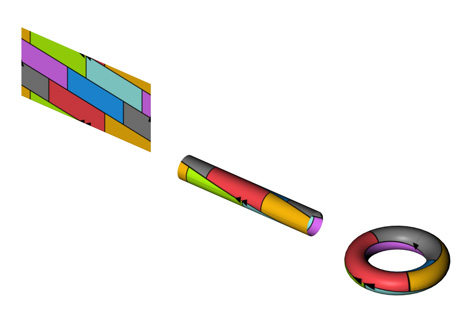
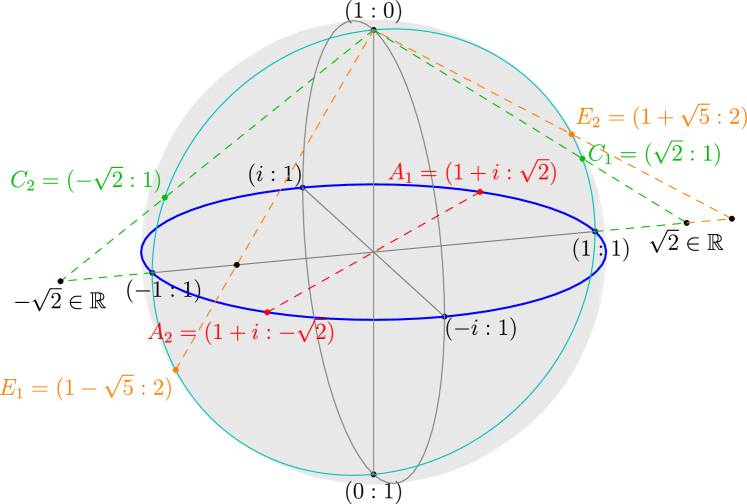

Chapter 64 Some topological constructions
In this short chapter we briefly describe some common spaces and constructions in topology that we haven’t yet discussed.
64.1 Spheres
Recall that
is the surface of an -sphere while
is the corresponding closed ball (So for example, is a disk in a plane while is the unit circle.)
Exercise 64.1.1
Show that the open ball is homeomorphic to .
In particular, consists of two points, while can be thought of as the interval .
ΨΨsize(8cm);
ΨΨdraw(dir(0)--dir(180), blue);
ΨΨdot(dir(0), red+4);
ΨΨdot(dir(180), red+4);
ΨΨlabel("$S^0$", dir(0), dir(90), red);
ΨΨlabel("$D^1$", dir(0)--dir(180), blue);
ΨΨadd(shift(-4,0)*CC());
ΨΨunitsize(2cm);
ΨΨfilldraw(unitcircle, lightblue+opacity(0.2), red);
ΨΨlabel("$D^2$", origin, blue);
ΨΨlabel("$S^1$", dir(45), dir(45), red);
Ψ
64.2 Quotient topology
Prototypical example for this section: , or the torus.
Given a space , we can identify some of the points together by any equivalence relation ; for an we denote its equivalence class by . Geometrically, this is the space achieved by welding together points equivalent under .
Formally,
Definition 64.2.1.
Let be a topological space, and an equivalence relation on the points of . Then is the space whose
-
•
Points are equivalence classes of , and
-
•
is open if and only if is open in .
As far as I can tell, this definition is mostly useless for intuition, so here are some examples.
Example 64.2.2 (Interval modulo endpoints)
Suppose we take and quotient by the equivalence relation which identifies the endpoints and . (Formally, .) In that case, we simply recover :
ΨΨΨsize(8cm);
ΨΨΨdraw(dir(0)--dir(180), blue);
ΨΨΨdot("$-1$", dir(0), dir(90), red+4);
ΨΨΨdot("$1$", dir(180), dir(90), red+4);
ΨΨΨlabel("$D^1$", dir(0)--dir(180), blue);
ΨΨΨadd(shift(-4,0)*CC());
ΨΨΨunitsize(2cm);
ΨΨΨdraw(unitcircle, blue);
ΨΨΨlabel("$S^1 \approx D^1 / {\sim}$", dir(45), dir(45), blue);
ΨΨΨdot("$-1 \sim 1$", dir(90), dir(90), red);
ΨΨ
Observe that a small open neighborhood around in the quotient space corresponds to two half-intervals at and in the original space . This should convince you the definition we gave is the right one.
Example 64.2.3 (More quotient spaces)
Convince yourself that:
-
•
Generalizing the previous example, modulo its boundary is .
-
•
Given a square , suppose we identify segments and together. Then we get a cylinder. (Think elementary school, when you would tape up pieces of paper together to get cylinders.)
-
•
In the previous example, if we also identify and together, then we get a torus. (Imagine taking our cylinder and putting the two circles at the end together.)
-
•
Let , and let if . Then is as well.
One special case that we did above:
Definition 64.2.4.
Let . Consider the equivalence relation which identifies all the points of with each other while leaving all remaining points inequivalent. (In other words, if or .) Then the resulting quotient space is denoted .
So in this notation,
Abuse of Notation 64.2.5.
Note that I’m deliberately being sloppy, and saying “” or “ is ”, when I really ought to say “ is homeomorphic to ”. This is a general theme in mathematics: objects which are homoeomorphic/isomorphic/etc. are generally not carefully distinguished from each other.
Example 64.2.6 (Weirder quotient spaces)
If the subspace is not closed in , would be quite weird.
For instance, let and . Then the space consists of the points . Here, the points and are different; yet every open set that contains , also contains .
We say this space is not Hausdorff.
64.3 Product topology
Prototypical example for this section: is , is the torus.
Definition 64.3.1.
Given topological spaces and , the product topology on is the space whose
-
•
Points are pairs with , , and
-
•
Topology is given as follows: the basis of the topology for is , for open and open.
Remark 64.3.2 —
It is not hard to show that, in fact, one need only consider basis elements for and . That is to say,
is also a basis for .
We really do need to fiddle with the basis: in , an open unit disk better be open, despite not being of the form .
This does exactly what you think it would.
Example 64.3.3 (The unit square)
Let and consider . We of course expect this to be the unit square. Pictured below is an open set of in the basis.
ΨΨsize(6cm);
ΨΨfilldraw(unitsquare, opacity(0.2)+lightblue, black);
ΨΨpair B = (0,1);
ΨΨpair A = (1,0);
ΨΨfill(box(0.3*A+0.2*B,0.6*A+0.7*B), lightred+opacity(0.5));
ΨΨlabel("$U \times V$", (0.45,0.45), brown);
ΨΨdraw(0.3*A--(0.3*A+B), heavygreen+dashed+1);
ΨΨdraw(0.6*A--(0.6*A+B), heavygreen+dashed+1);
ΨΨdraw(0.2*B--(0.2*B+A), heavycyan+dashed+1);
ΨΨdraw(0.7*B--(0.7*B+A), heavycyan+dashed+1);
ΨΨdraw( 0.3*A--0.6*A, heavygreen+2 );
ΨΨopendot( 0.3*A, heavygreen+2);
ΨΨopendot( 0.6*A, heavygreen+2);
ΨΨlabel("$U$", 0.45*A, dir(-90), heavygreen);
ΨΨdraw( 0.2*B--0.7*B, heavycyan+2 );
ΨΨopendot( 0.2*B, heavycyan+2);
ΨΨopendot( 0.7*B, heavycyan+2);
ΨΨlabel("$V$", 0.45*B, dir(180), heavycyan);
ΨΨ
Exercise 64.3.4
Convince yourself this basis gives the same topology as the product metric on . So this is the “right” definition.
Example 64.3.5 (More product spaces)
-
(a)
is the Euclidean plane.
-
(b)
is a cylinder.
-
(c)
is a torus! (Why?)
64.4 Disjoint union and wedge sum
Prototypical example for this section: is the figure eight.
The disjoint union of two spaces is geometrically exactly what it sounds like: you just imagine the two spaces side by side. For completeness, here is the formal definition.
Definition 64.4.1.
Let and be two topological spaces. The disjoint union, denoted , is defined by
-
•
The points are the disjoint union , and
-
•
A subset is open if and only if and are open.
Exercise 64.4.2
Show that the disjoint union of two nonempty spaces is disconnected.
More interesting is the wedge sum, where two topological spaces and are fused together only at a single base point.
Definition 64.4.3.
Let and be topological spaces, and and be points. We define the equivalence relation by declaring only. Then the wedge sum of two spaces is defined as
Example 64.4.4 ( is a figure eight)
Let and , and let and be any points. Then is a “figure eight”: it is two circles fused together at one point.
ΨΨΨsize(3cm); ΨΨΨdraw(shift(-1,0)*unitcircle); ΨΨΨdraw(shift(1,0)*unitcircle); ΨΨΨdotfactor *= 1.4; ΨΨΨdot(origin); ΨΨ
Abuse of Notation 64.4.5.
We often don’t mention and when they are understood (or irrelevant). For example, from now on we will just write for a figure eight.
Remark 64.4.6 —
Annoyingly, in LaTeX \wedge gives instead
of (which is \vee).
So this really should be called the “vee product”, but too late.
64.5 CW complexes
Using this construction, we can start building some spaces. One common way to do so is using a so-called CW complex. Intuitively, a CW complex is built as follows:
-
•
Start with a set of points .
-
•
Define by taking some line segments (copies of ) and fusing the endpoints (copies of ) onto .
-
•
Define by taking copies of (a disk) and welding its boundary (a copy of ) onto .
-
•
Repeat inductively up until a finite stage ; we say is -dimensional.
The resulting space is the CW-complex. The set is called the -skeleton of . Each is called a -cell; it is customary to denote it by where is some index. We say that is finite if only finitely many cells were used.
Abuse of Notation 64.5.1.
Technically, most sources (like [ref:hatcher]) allow one to construct infinite-dimensional CW complexes. We will not encounter any such spaces in the Napkin.
Example 64.5.2 ( with and cells)
-
(a)
First, we start with having two points and . Then, we join them with two -cells (green), call them and . The endpoints of each -cell (the copy of ) get identified with distinct points of ; hence . Finally, we take a single -cell (yellow) and weld it in, with its boundary fitting into the copy of that we just drew. This gives the figure on the left.
-
(b)
In fact, one can do this using just cells. Start with having a single point . Then, use a single -cell , fusing its two endpoints into the single point of . Then, one can fit in a copy of as before, giving as on the right.
ΨΨΨsize(4cm);
ΨΨΨfilldraw(unitcircle, opacity(0.2)+yellow, heavygreen);
ΨΨΨdotfactor *= 1.4;
ΨΨΨdot(dir(90), blue);
ΨΨΨdot(dir(-90), blue);
ΨΨΨlabel("$e_a^0$", dir(90), dir(90), blue);
ΨΨΨlabel("$e_b^0$", dir(-90), dir(-90), blue);
ΨΨΨlabel("$e_c^1$", dir(0), dir(0), heavygreen);
ΨΨΨlabel("$e_d^1$", dir(180), dir(180), heavygreen);
ΨΨΨlabel("$e^2$", origin, origin);
ΨΨ
ΨΨΨsize(4cm);
ΨΨΨfilldraw(unitcircle, opacity(0.2)+yellow, heavygreen);
ΨΨΨdotfactor *= 1.4;
ΨΨΨdot(dir(90), blue);
ΨΨΨlabel("$e^0$", dir(90), dir(90), blue);
ΨΨΨlabel("$e^1$", dir(-90), dir(-90), heavygreen);
ΨΨΨlabel("$e^2$", origin, origin);
ΨΨ
Example 64.5.3 ( as a CW complex)
-
(a)
One can obtain (for ) with just two cells. Namely, take a single point for , and to obtain take and weld its entire boundary into .
We already saw this example in the beginning with , when we saw that the sphere was the result when we fuse the boundary of a disk together.
-
(b)
Alternatively, one can do a “hemisphere” construction, by constructing inductively using two cells in each dimension. So consists of two points, then is obtained by joining these two points by two segments (-cells), and is obtained by gluing two hemispheres (each a -cell) with as its equator.
Definition 64.5.4.
Formally, for each -cell we want to add to , we take its boundary and weld it onto via an attaching map . Then
where identifies each boundary point of with its image in .
64.6 The torus, Klein bottle, ,
We now present four of the most important examples of CW complexes.
64.6.i The torus
The torus can be formed by taking a square and identifying the opposite edges in the same direction: if you walk off the right edge, you re-appear at the corresponding point in on the left edge. (Think Asteroids from Atari!)
ΨΨsize(2cm); ΨΨfill(unitsquare, yellow+opacity(0.2)); ΨΨpair C = (0,0); ΨΨpair B = (1,0); ΨΨpair A = (1,1); ΨΨpair D = (0,1); ΨΨdraw(A--B, red, MidArrow); ΨΨdraw(B--C, blue, MidArrow); ΨΨdraw(D--C, red, MidArrow); ΨΨdraw(A--D, blue, MidArrow); Ψ
Thus the torus is .
Note that all four corners get identified together to a single point. One can realize the torus in -space by treating the square as a sheet of paper, taping together the left and right (red) edges to form a cylinder, then bending the cylinder and fusing the top and bottom (blue) edges to form the torus.
Image from [img:torus]
The torus can be realized as a CW complex with
-
•
A -skeleton consisting of a single point,
-
•
A -skeleton consisting of two -cells , , and
ΨΨΨunitsize(1cm); ΨΨΨdraw(shift(-1,0)*unitcircle, blue, MidArrow); ΨΨΨdraw(shift(1,0)*rotate(180)*unitcircle, red, MidArrow); ΨΨΨlabel("$e^1_a$", 2*dir(180), dir(180), blue); ΨΨΨlabel("$e^1_b$", 2*dir(0), dir(0), red); ΨΨΨdotfactor *= 1.4; ΨΨΨdot("$e^0$", origin, dir(0)); ΨΨ -
•
A -skeleton with a single -cell , whose circumference is divided into four parts, and welded onto the -skeleton “via ”. This means: wrap a quarter of the circumference around , then another quarter around , then the third quarter around but in the opposite direction, and the fourth quarter around again in the opposite direction as before.
ΨΨΨsize(3cm); ΨΨΨfill(unitcircle, yellow+opacity(0.2)); ΨΨΨdefaultpen(linewidth(1)); ΨΨΨdraw(arc(origin, 1, 45, 135), blue, MidArrow); ΨΨΨdraw(arc(origin, 1, 315, 225), blue, MidArrow); ΨΨΨdraw(arc(origin, 1, 135, 225), red, MidArrow); ΨΨΨdraw(arc(origin, 1, 45, -45), red, MidArrow); ΨΨΨlabel("$e^2$", origin, origin); ΨΨ
We say that is the attaching word; this shorthand will be convenient later on.
64.6.ii The Klein bottle
The Klein bottle is defined similarly to the torus, except one pair of edges is identified in the opposite manner, as shown.
ΨΨsize(2cm); ΨΨfill(unitsquare, yellow+opacity(0.2)); ΨΨpair C = (0,0); ΨΨpair B = (1,0); ΨΨpair A = (1,1); ΨΨpair D = (0,1); ΨΨdraw(A--B, red, MidArrow); ΨΨdraw(C--B, blue, MidArrow); ΨΨdraw(D--C, red, MidArrow); ΨΨdraw(A--D, blue, MidArrow); Ψ
Unlike the torus one cannot realize this in -space without self-intersecting. One can tape together the red edges as before to get a cylinder, but to then fuse the resulting blue circles in opposite directions is not possible in 3D. Nevertheless, we often draw a picture in 3-dimensional space in which we tacitly allow the cylinder to intersect itself.
![[Uncaptioned image]](external/venhance-napkin/media/KleinBottle-01.png)
Image from [img:kleinfold, img:kleinbottle]
Like the torus, the Klein bottle is realized as a CW complex with
-
•
One -cell,
-
•
Two -cells and , and
-
•
A single -cell attached this time via the word .
64.6.iii Real projective space
Let’s start with . The space is obtained if we reverse both directions of the square from before, as shown.
ΨΨsize(2cm); ΨΨfill(unitsquare, yellow+opacity(0.2)); ΨΨpair C = (0,0); ΨΨpair B = (1,0); ΨΨpair A = (1,1); ΨΨpair D = (0,1); ΨΨdraw(B--A, red, MidArrow); ΨΨdraw(C--B, blue, MidArrow); ΨΨdraw(D--C, red, MidArrow); ΨΨdraw(A--D, blue, MidArrow); Ψ
However, once we do this the fact that the original polygon is a square is kind of irrelevant; we can combine a red and blue edge to get the single purple edge. Equivalently, one can think of this as a circle with half its circumference identified with the other half:
ΨΨsize(3cm);
ΨΨdotfactor *= 2;
ΨΨfill(unitcircle, opacity(0.2)+yellow);
ΨΨdraw(dir(-90)..dir(0)..dir(90), purple, MidArrow);
ΨΨdraw(dir(90)..dir(180)..dir(-90), purple, MidArrow);
ΨΨdot(dir(90));
ΨΨdot(dir(-90));
ΨΨlabel("$\mathbb{RP}^2$", origin, origin);
Ψ
ΨΨsize(3cm);
ΨΨdotfactor *= 2;
ΨΨdraw(dir(-90)..dir(0)..dir(90));
ΨΨdraw(dir(90)..dir(180)..dir(-90), dashed);
ΨΨfill(unitcircle, yellow+opacity(0.2));
ΨΨdot(dir(90));
ΨΨopendot(dir(-90));
ΨΨlabel("$\mathbb{RP}^2$", origin, origin);
Ψ
The resulting space should be familiar to those of you who do projective (Euclidean) geometry. Indeed, there are several possible geometric interpretations:
-
•
One can think of as the set of lines through the origin in , with each line being a point in .
Of course, we can identify each line with a point on the unit sphere , except for the property that two antipodal points actually correspond to the same line, so that can be almost thought of as “half a sphere”. Flattening it gives the picture above.
-
•
Imagine , except augmented with “points at infinity”. This means that we add some points “infinitely far away”, one for each possible direction of a line. Thus in , any two lines indeed intersect (at a Euclidean point if they are not parallel, and at a point at infinity if they do).
This gives an interpretation of , where the boundary represents the line at infinity through all of the points at infinity. Here we have used the fact that and interior of are homeomorphic.
Exercise 64.6.1
Observe that these formulations are equivalent by considering the plane in , and intersecting each line in the first formulation with this plane.
We can also express using coordinates: it is the set of triples of real numbers not all zero up to scaling, meaning that
for any . Using the “lines through the origin in ” interpretation makes it clear why this coordinate system gives the right space. The points at infinity are those with , and any point with gives a Cartesian point since
hence we can think of it as the Cartesian point .
In this way we can actually define real-projective -space, for any , as either
-
(i)
The set of lines through the origin in ,
-
(ii)
Using coordinates as above, or
-
(iii)
As augmented with points at infinity, which themselves form a copy of .
As a possibly helpful example, we give all three pictures of .
Example 64.6.2 (Real projective -Space)
can be thought of as modulo the relation the antipodal points are identified. Projecting onto a tangent line, we see that we get a copy of plus a single point at infinity, corresponding to the parallel line (drawn in cyan below).
ΨΨΨsize(7cm);
ΨΨΨfilldraw(unitcircle, lightblue+opacity(0.2), heavyblue+opacity(0.4));
ΨΨΨlabel("$S^1$", dir(225), dir(225), lightblue);
ΨΨΨdot("$\vec 0$", origin, dir(45));
ΨΨΨpair X1 = (-2.1,1);
ΨΨΨpair X2 = (1.9,1);
ΨΨΨdraw(X1--X2, heavyred, Arrows);
ΨΨΨdot("$0$", (0,1), dir(90), heavyred);
ΨΨΨdot("$1$", (1,1), dir(90), heavyred);
ΨΨΨpair P = extension( (0,1), (1,1), dir(250), dir(70) );
ΨΨΨdot("$0.36$", P, dir(90), heavyred);
ΨΨΨlabel("$\mathbb R$", X2, dir(105), heavyred);
ΨΨΨpath L(pair A, pair B, real a=0.6, real b=a)
ΨΨΨΨ{ return (a*(A-B)+A)--(b*(B-A)+B); }
ΨΨΨdraw(L(dir(130),-dir(130),0.2,0.2), gray);
ΨΨΨdraw(L(dir(250),-dir(250),0.2,0.2), gray);
ΨΨΨdraw(L(dir(-20),-dir(-20),0.2,0.2), gray);
ΨΨΨdraw(L(dir(0), -dir(0), 0.4,0.4), heavycyan+1);
ΨΨ
Thus, the points of have two forms:
-
•
, which we think of as (in dark red above), and
-
•
, which we think of as , corresponding to the cyan line above.
So, we can literally write
Note that is also the boundary of . In fact, note also that topologically we have
since it is the “real line with endpoints fused together”.
ΨΨΨsize(2cm);
ΨΨΨdraw(unitcircle, heavyred);
ΨΨΨdot("$\infty$", dir(90), dir(90), heavycyan);
ΨΨΨdot("$0$", dir(-90), dir(-90), heavyred);
ΨΨ
Since is just “ (or ) with as its boundary”, we can construct as a CW complex inductively. Note that thus consists of one cell in each dimension.
Example 64.6.3 ( as a cell complex)
-
(a)
is a single point.
-
(b)
is a circle, which as a CW complex is a -cell plus a -cell.
-
(c)
can be formed by taking a -cell and wrapping its perimeter twice around a copy of .
64.6.iv Complex projective space
The complex projective space is defined like with coordinates, i.e.
under scaling; this time are complex. As before, can be thought of as augmented with some points at infinity (corresponding to ).
Example 64.6.4 (Complex projective space)
-
(a)
is a single point.
-
(b)
is plus a single point at infinity (“complex infinity” if you will). That means as before we can think of as
So, imagine taking the complex plane and then adding a single point to encompass the entire boundary. The result is just sphere .
Here is a picture of with its coordinate system, the Riemann sphere.
Remark 64.6.5 (For Euclidean geometers) —
You may recognize that while is the setting for projective geometry, inversion about a circle is done in instead. When one does an inversion sending generalized circles to generalized circles, there is only one point at infinity: this is why we work in .
Like , is a CW complex, built inductively by taking and welding its boundary onto The difference is that as topological spaces,
Thus, we attach the cells , , and so on inductively to construct . Thus we see that
Moral 64.6.6 —
consists of one cell in each even dimension.
64.7 A few harder problems to think about
Problem 64A.
Show that a space is Hausdorff if and only if the diagonal is closed in the product space .
Problem 64B.
Realize the following spaces as CW complexes:
-
(a)
Möbius strip.
-
(b)
.
-
(c)
.
Problem 64C.
Show that a finite CW complex is compact. Prove and use the fact that a quotients of compact spaces remain compact.